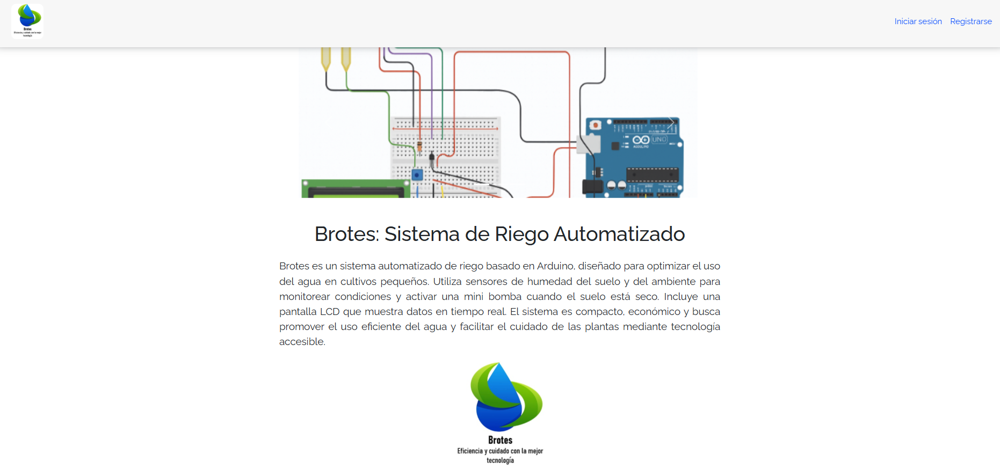
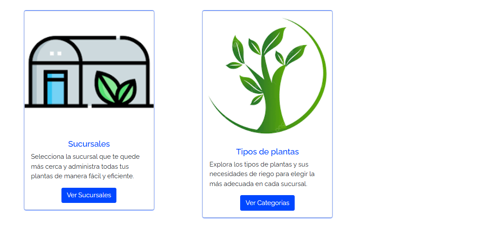
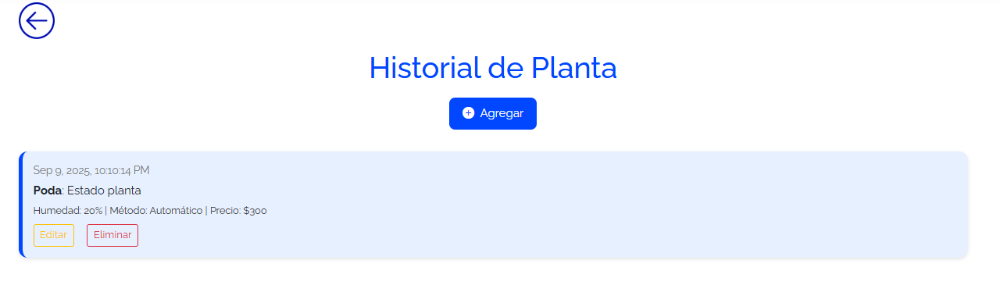

Desarrollo de sistema web con NodeJS, Angular y MongoDB Atlas
Visitar Proyecto
| Rol | Credenciales | Funciones principales |
|---|---|---|
| ADMIN | admin@gmail.com 123456@Intecap |
- Agregar tipos de plantas - Gestionar empresas y sucursales - Crear empleados y clientes |
| CLIENTE | maria@solis.com 123456@Intecap |
- Ver tipos de plantas - Agregar plantas a sucursales - Interacción con empleados vía chat |
| EMPLEADO | sergio@gmail.com 123456@Intecap |
- Ver plantas de clientes - Actualizar estado de plantas - Gestionar historial de chat con clientes |
| BACKEND | FRONTEND | HOSTING |
|---|---|---|

NodeJS, Express, MongoDB, JWT, Render y MongoDB Atlas |

Angular, TypeScript, HTML, SCSS, servicios guard y SweetAlert |

MongoDB Compass, Render y Firebase |